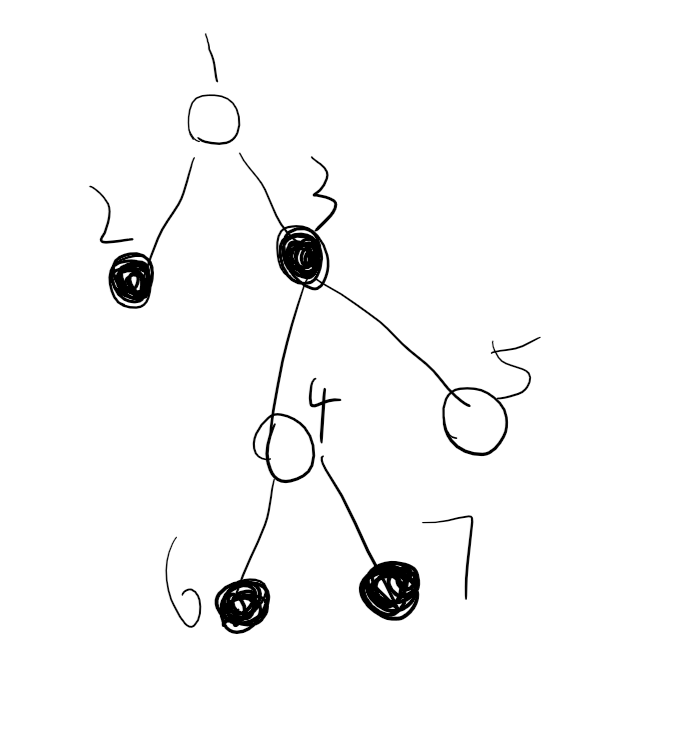

2020ICPC济南J
题意
给一棵树上的所有点赋值使得$u,v$间有边当且仅当$w[u]|w[v]=2^{60}-1$（’$|$’为二进制按位或）
题解
为了方便构造，我们对这棵树进行黑白染色，
为了防止同色点之间产生边，可以令黑点权值二进制前两位为$01$，白点为$10$，
再考虑对构造方法增加限制以方便构造，
由题意得，权值的二进制最大可以有$60$位，
显然，点数较少的一种颜色（以下当作白色）不会超过$50$种，
因此，我们可以增加一个限制：所有白点权值二进制中有且仅有一个$0$，
这样就能构造出一组权值互不相同的白点，
有了白点，黑点就可以直接确定了，例如

如果$w[1]=11…1110,w[4]=11…1101,w[5]=11…1011$（忽略前两位$01$和$10$，下同），
则$w[2]=00…0001,w[3]=00…0111,w[6]=w[7]=00…0010$，
此时白点的$0$位就相当于钥匙孔，黑点的$1$就相当于钥匙，一个钥匙（黑点）必须能打开周围的所有锁，
这样想，边的关系就确定了，游戏结束。
代码
1 |
|
2020ICPC济南E
题意
在写了在写了
题解
在写了在写了
代码
在写了在写了
证明题
命题
对任意$2n-1$个数，一定存在$n$个数使其和为$n$的倍数
证明
在写了在写了
总结
构造问题的一般思路：
- 增量构造，从$f(n-k)$到$f(n)$，一般要正推
- 递归构造，从$f(\frac{n}{k})$到$f(n)$，一般要逆推
- 转移构造，【从$f$到$g$】等价于【先从$f$到$h$，再从$h$到$g$】
- 增加限制，当构造自由度太高时可以视情况增加一些限制
- 待定参数，先考虑答案的状态，将其中一些参数设为未知，然后求出参数和答案的关系
- 调整构造，先按照某种方法构造出近似解，然后按照某种原则微调至答案
- 随机构造，利用题目里的随机性构造答案，一般和概率的计算有关